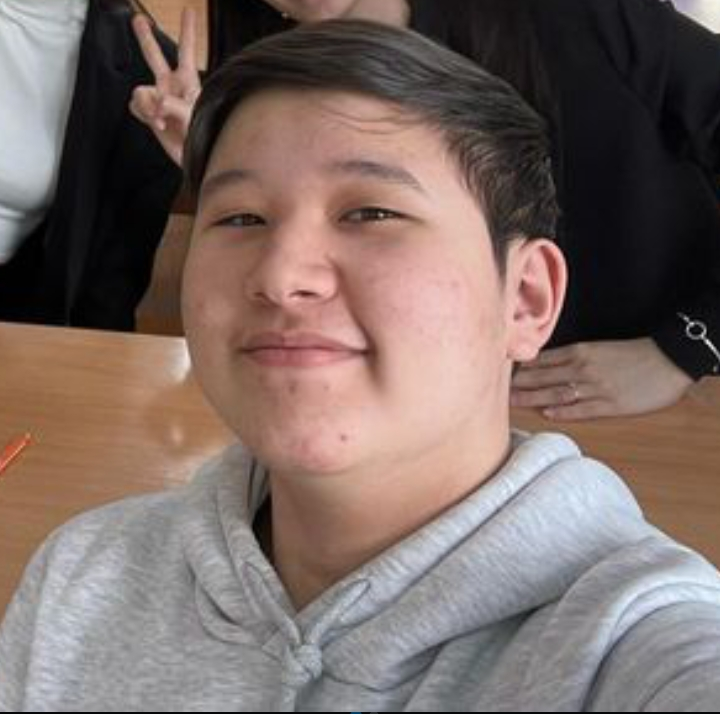

Біздің оқушылар не дейді
Бұл шолулар сайт мұғалімдерінің оқушыларға бағалауды жақсартуға ғана емес, сонымен қатар пәндерге қызығушылық пен өз қабілеттеріне деген сенімділікті табуға қалай көмектесетінін көрсетеді.

Мен бұл сайтта бір жыл оқыдым және бұл маған математика және басқа пәндер бойынша оқу үлгерімін жақсартуға көмектесті. Математика бұрын маған өте қиын болып көрінді, бірақ қазір мұғалімдердің егжей-тегжейлі түсіндірулерінің арқасында мен есептерді қалай шешуге болатынын жақсы түсіндім. Мен үшін жест-ишара аудармасы бар сабақтар өте пайдалы болды, мұнда барлығы қарапайым мысалдармен көрсетіледі. Осындай сабақтардың арқасында мен математикадан қорқуды қойдым, енді мен қуанышпен айналысамын.
Азат, 13 жас

Бұл сайт Мен үшін нағыз олжа болды! Тарих сабақтары өте қызықты және мазмұнды. Мұғалімдер фактілерді айтып қана қоймай, оларды жест-ишара мен көрнекі материалдар арқылы көрсетеді, бұл өткен оқиғаларды тереңірек түсінуге көмектеседі. Мектепте маған Тарихты меңгеру қиын болды, Мен мұнда тақырыпқа шынымен араласа бастадым, тіпті одан да маңызды деңгейде оқуды жалғастыруды шештім. Барлық мұғалімдерге қолдау мен көңіл бөлгені үшін рахмет!